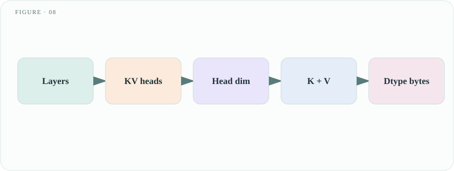

第三章、第四章讲了 PagedAttention 的思想和实现。这一章咱们系统性地理解 KV Cache 的全生命周期管理——从显存估算到 Block 的分配回收，再到量化和监控。

INTERACTIVE LAB
估算一个请求的 KV Cache
示例固定为 32 层、8 个 KV heads、head dimension 128、FP16 K/V。真实模型配置可能不同。
估算约 1.00 GiB / 请求（不含额外实现开销）。
8.1 KV Cache 占用多大显存？精确估算
生产环境中，准确的显存估算比什么都重要。估少了 OOM，估多了浪费资源：
KV Cache 大小 = 2 (K+V) × num_layers × num_kv_heads × head_dim × num_tokens × dtype_bytes
以 Llama-3-8B 为例（FP16）:
= 2 × 32 × 8 × 128 × num_tokens × 2 bytes
= 131,072 bytes/token ≈ 0.125 MB/token
注意：这里 num_kv_heads=8 是因为 Llama-3-8B 用了 GQA (Grouped Query Attention)
如果是 MHA (Multi-Head), num_kv_heads=32，那就是 0.5 MB/token| 示例配置（FP16 K/V） | 每 token KV Cache | 8192 tokens / 单请求 |
|---|---|---|
| Llama 3 8B：32 层、8 KV heads、128 head dim | 128 KiB | 约 1 GiB |
| Llama 3 70B：80 层、8 KV heads、128 head dim | 320 KiB | 约 2.5 GiB |
这是按公开模型结构与 FP16 K/V 计算的理论示例，不包含 block 对齐、模型变体、并行布局、临时缓冲和运行时预留。
GQA 是 KV Cache 的福音：Llama-3-8B 用了 GQA（Grouped Query Attention），KV 头只有 8 个（而非 32 个），KV cache 缩小了 4×。这就是为什么同样 8B 级别，Llama-3 比 Mistral 的 KV cache 小得多。
8.2 Free Block Pool：显存的"内存池"
vLLM 在启动时预分配所有物理 Block 到一个全局空闲池：
启动日志:
GPU KV cache size: 643,232 tokens
Block size: 16
Number of blocks: 40,202
Free blocks: 40,202 (100%)
运行中:
Free blocks: 35,120 (87.4%) ← 当前可用
Allocated blocks: 5,082 ← 已分配Block 的分配和回收严格配对：分配一个，free pool 少一个；回收一个，free pool 多一个。整个过程不涉及显存分配/释放（避免 CUDA API 调用），只修改 free pool 的计数器。
8.3 KV Cache 量化：FP8 E4M3
FP8 KV Cache 是当前最具性价比的显存优化方案：
vllm serve meta-llama/Llama-3-8B \
--kv-cache-dtype fp8 \
--max-model-len 32768
# 效果：同样的显存，可容纳的 token 数翻倍
# FP16: 128 并发 × 8192 token = 128 GB KV cache
# FP8: 256 并发 × 8192 token = 128 GB KV cache ← 并发翻倍FP8 的精度损失非常小（<0.1% 在 MMLU 等 benchmark 上），因为 K/V 激活值天然范围集中，适合 8-bit 表示。
8.4 监控 KV Cache 健康状态
# 先访问服务的 /metrics endpoint
curl http://localhost:8000/metrics
# 指标名称、labels 和 histogram buckets 随版本演进
# 以当前 vLLM Production Metrics 文档与实际输出为准红线告警：如果 num_blocks_free 长时间低于 100，说明并发数到极限了。新请求会因为 block 不足而排队。解决方案：降低 --max-model-len（减少单个请求的 block 上限），或启用 FP8 KV cache，或加 GPU。
8.5 GPU↔CPU 分层存储
V1 移除了 GPU-CPU swap 机制（V0 有这个 feature 但性能差）。推荐方案是用 LMCache（vLLM 生产栈内置）：
- 热 KV cache → GPU HBM（当前活跃请求）
- 温 KV cache → CPU DRAM（最近完成的对话，可快速恢复）
- 冷 KV cache → SSD/NVMe（长期存档，按需加载）
这个分层策略对多轮对话场景特别有效——用户回来继续聊天时不用从头计算。下一章咱们深入 Prefix Caching，看看已有 KV cache 如何在不同请求之间共享。
参考资料与证据
- vLLM CacheConfigCacheConfig attributes
- vLLM Hybrid KV Cache ManagerDefinitions；Allocation